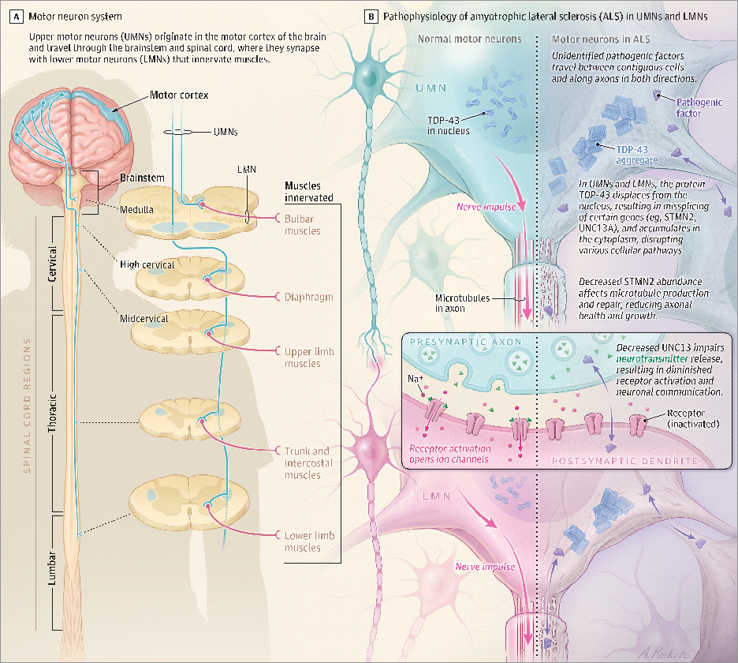

本ページで使用する略語一覧
| ALS | amyotrophic lateral sclerosis — 筋萎縮性側索硬化症 |
| UMN | upper motor neuron — 上位運動ニューロン |
| LMN | lower motor neuron — 下位運動ニューロン |
| sALS | sporadic ALS — 孤発性ALS |
| fALS | familial ALS — 家族性ALS |
| C9orf72 | chromosome 9 open reading frame 72 — 第9染色体オープンリーディングフレーム72 |
| SOD1 | superoxide dismutase 1 — スーパーオキシドジスムターゼ1 |
| TDP-43 | TAR DNA-binding protein 43 |
| FUS | fused in sarcoma |
| PLS | primary lateral sclerosis — 原発性側索硬化症（UMN優位型ALS亜型） |
| ALSFRS-R | ALS Functional Rating Scale–Revised — ALS機能評価スケール改訂版 |
| NfL | neurofilament light protein — ニューロフィラメント軽鎖 |
| FVC | forced vital capacity — 努力性肺活量 |
| MIP | maximal inspiratory pressure — 最大吸気圧 |
| NIV | noninvasive ventilation — 非侵襲的人工換気 |
| PEG | percutaneous endoscopic gastrostomy — 経皮的内視鏡的胃ろう造設術 |
| PBA | pseudobulbar affect — 仮性球麻痺様情動 |
| FDA | US Food and Drug Administration — 米国食品医薬品局 |
| EMG | electromyography — 筋電図 |
| MRI | magnetic resonance imaging — 磁気共鳴画像 |
| MG | myasthenia gravis — 重症筋無力症 |
| MMN | multifocal motor neuropathy — 多巣性運動ニューロパチー |
| CSF | cerebrospinal fluid — 脳脊髄液 |
| ASO | antisense oligonucleotide — アンチセンスオリゴヌクレオチド |
| RCT | randomized controlled trial — ランダム化比較試験 |
| CI | confidence interval — 信頼区間 |
| SMD | standardized mean difference — 標準化平均差 |
SECTION 1-1 疫学・リスク因子
/10万人（世界）
/10万人（世界）
（米国）
平均生存期間
（sALS）
（fALS）
疫学の概要
ALSは成人で最も多い運動ニューロン疾患であり、神経変性疾患の中では世界第3位の頻度である。米国の罹患率は1990〜2021年の間に約13%増加した。罹患率は40歳以降に上昇し、55〜75歳でピークに達する。男女比はsALSで約1.2:1〜1.5:1、fALSでは約1:1と男女差が縮まる傾向にある。診断後の生存期間は平均3〜5年だが、約10%の患者は10年以上生存する。
確立されたリスク因子：高齢（40歳以降）、男性、ALS家族歴のほか、軍歴（兵役経験）を持つ人で罹患率が高いことが報告されているが、その機序は不明である。
診断遅延：症状発現から診断まで通常10〜16か月かかる。初期症状が微妙であること、他疾患との鑑別に時間を要することが原因である。
SECTION 1-2 臨床像・病型分類
ALS の典型的臨床像
ALSの最も典型的な症状は、片側の局所的な筋脱力から始まる無痛性の筋力低下であり、数か月〜数年かけて他の筋群へと広がる。上位運動ニューロン（UMN）症状と下位運動ニューロン（LMN）症状が混在する点がALS診断の核心である。
・筋緊張亢進、痙縮
・病的反射（過反射、顎反射）
・線維束性収縮（fasciculations）
・筋緊張低下・弛緩・腱反射低下
・足が引っかかる（drop foot）
・鍵を回す・食器を使うなどの手指操作が困難
・スーツケースを棚に上げられない
・ろれつが回らない（構音障害）
これらの症状は徐々に進行し、数か月で悪化する。
| 病型 | 頻度 | 典型的な症状 | 生存期間 | 主な鑑別 |
|---|---|---|---|---|
| 脊髄型ALS Spinal-onset |
≒65% | 一肢からの進行性脱力・筋萎縮（手の脱力・足下垂など）。UMN+LMN 所見 | 3–5年 | 頸髄症、MMN、糖尿病多発神経根症、MG |
| 球麻痺型ALS Bulbar-onset |
≒30% | 構音障害・嚥下障害・舌萎縮が先行し、後に四肢・呼吸筋に波及 | 2–3年 | MG、脳幹卒中、顔面感覚運動ニューロパチー |
| 呼吸型ALS Respiratory-onset |
≒5% | 労作時呼吸困難・起坐呼吸・睡眠関連呼吸障害が先行 | 1.5–2.5年 | 横隔神経麻痺、ポンペ病、MG |
| Flail arm症候群 | ≒10% | 肩から対称性に進行する上肢の脱力・萎縮 | 4–6年 | 腕神経叢障害、糖尿病多発神経根症 |
| Flail leg症候群 | 5% | 遠位優位の下肢弛緩性脱力・萎縮、その後上肢・球麻痺に波及 | 4–6年 | 腰椎神経根症、多発性ニューロパチー |
| 進行性筋萎縮症 PMA（LMN優位） |
5–10% | 筋萎縮・線維束性収縮・反射低下が主体。初期にはUMN所見が不明瞭 | ≥5年 | Hirayama病、MMN、脊髄性筋萎縮症 |
| 原発性側索硬化症 PLS（UMN優位） |
— | 痙縮・過反射・巧緻運動障害・歩行障害が主体。LMN所見はほぼなし | >10年（可変） | 脳卒中、遺伝性痙性対麻痺、PSP |
| 認知機能障害型 ALS-plus |
10–15% | 無感情・脱抑制・共感欠如・強迫行動・遂行機能低下（前頭側頭型認知症） | ≒2–4年 | 前頭側頭型認知症、PSP、Lewy小体認知症 |
PMA：進行性筋萎縮症、PLS：原発性側索硬化症、PSP：進行性核上性麻痺、MMN：多巣性運動ニューロパチー、MG：重症筋無力症
SECTION 1-3 運動系以外の症状（ALS-plus）
ALS の非運動症状
ALSは純粋な運動ニューロン疾患とは限らず、多彩な非運動症状を伴う。診断時に10〜15%が前頭側頭型認知症（FTD）の診断基準を満たし、正式な神経心理検査を行うと最大50%に軽度の認知・行動障害が認められる。
（PBA）
（通常軽度）
筋けいれん・睡眠障害
PBA（仮性球麻痺様情動）：球麻痺型UMNの神経変性による。状況に不釣り合いな突然の笑いや泣きの発作。意識的にコントロールできない点が特徴。ALS患者の最大50%が経験する。
その他のALS-plus症状（各1〜15%）：パーキンソニズム（無動・固縮・振戦）、小脳変性（運動失調・測距障害）、軽度感覚障害（固有覚消失・しびれ）、自律神経機能障害（尿失禁・起立性低血圧・勃起機能障害）。
SUMMARY 第1章のキーメッセージ
SECTION 2-1 診断基準・電気生理
ALS の診断
ALSは臨床基準に基づいて診断される。診断の核心は「進行性の筋力低下で、UMNとLMNの両方の関与を示し、他の病因が存在しないこと」である。複数の診断基準が存在する：改訂エル・エスコリアル基準、淡路基準、エアリーハウス基準、ゴールドコースト基準。原発性側索硬化症（PLS）については2020年にコンセンサス診断基準が制定された。
病歴・身体所見：UMN症状（痙縮・過反射・病的反射）とLMN症状（筋萎縮・線維束性収縮・脱力・反射低下）の混在を確認。症状が他の体部位に広がっていることを確認。
電気生理（EMG・神経伝導検査）：複数の神経筋領域（頸部・胸部・腰部）での能動的神経脱落（線維電位・陽性鋭波・線維束性収縮）と慢性再神経支配（大きく長い随意運動単位電位）を確認。神経伝導検査は通常正常（罹患部での運動応答振幅低下を除く）。
画像・血液検査（他疾患除外）：球麻痺症状には頭部MRI、手の脱力には頸椎MRI。血液検査でCMP・CBC・TSH・CK・ESR/CRP・ANA・RF・VitB12・抗GM1抗体・SPEP等を確認（Table 2参照）。
遺伝子検査（全例推奨）：ALS遺伝カウンセリング・遺伝子パネル検査を全患者に推奨（米国遺伝子検査・カウンセリングガイドライン）。fALSの70%・sALSの5〜10%に病原性遺伝子変異が同定される。
Table 2：ALS診断に用いる主要検査
| 検査 | 目的 | ALS での典型所見 |
|---|---|---|
| EMG | LMN の神経脱落・再神経支配を確認。筋疾患除外。 | 能動的神経脱落（線維電位・陽性鋭波）と慢性再神経支配（大きく長いMUP）。線維束性収縮 |
| 神経伝導検査 | 脱髄性ニューロパチー・多発ニューロパチー除外 | 一般的に正常。罹患部での運動応答振幅低下のみ |
| 反復神経刺激 | 神経筋接合部疾患除外（MG等） | 正常または軽度の漸減 |
| 遺伝子パネル | ALS関連遺伝子変異の同定 | fALSの70%、sALSの5〜10%で同定可能 |
| 頭部MRI | 腫瘍・脱髄・脳卒中などの構造的疾患除外 | 通常正常（最大30%の患者で皮質脊髄路のT2高信号） |
| 脊椎MRI・脊髄造影 | 脊髄症（構造的・脱髄性・代謝性・脊椎症）除外 | 正常（または症状を説明しえない偶発的異常のみ） |
| CK | 筋疾患除外 | 正常〜中等度上昇 |
| 血液一般・生化学 CBC・CMP・Ca・P・肝酵素 |
全身疾患・悪性腫瘍のスクリーニング | ALS では正常 |
| 抗GM1抗体 | 多巣性運動ニューロパチー（MMN）除外 | — |
| AchR抗体・MuSK抗体 | 重症筋無力症（MG）除外 | — |
| SPEP・免疫固定 | パラプロテイン血症関連多発神経根症除外 | — |
| 筋生検 | 筋疾患・ニューロパチー性原因除外 | 神経脱落・再神経支配を反映する線維型グルーピング |
MUP：motor unit potential、SPEP：serum protein electrophoresis、AchR：acetylcholine receptor、MuSK：muscle-specific kinase
SECTION 2-2 バイオマーカー
ニューロフィラメント軽鎖（NfL）
現時点でALSに診断的なバイオマーカーは存在しない。ニューロフィラメント軽鎖（NfL）はアルツハイマー病・パーキンソン病・ALS等の神経変性疾患で上昇する非特異的な神経軸索障害マーカーである。ALSの診断における精度を以下に示す。
感度
特異度
感度 / 特異度
SOD1遺伝子変異キャリアなど遺伝的にALSを発症しやすい人では、症状発現前から血清・CSFのNfLが上昇する。高いNfL値は病勢・進行速度・生存期間の短縮と関連すると考えられているが、確証的なエビデンスはまだない。
SUMMARY 第2章のキーメッセージ
SECTION 3-1 遺伝子変異と原因遺伝子
ALS の遺伝子基盤
ALSには60以上の遺伝子が関連し、ほとんどが常染色体優性遺伝形式をとる。当初sALSと考えられた患者の5〜10%が遺伝子検査後にfALSに再分類される。fALSは典型的に若年発症（45〜55歳）だが、sALS（55〜65歳）と臨床像は酷似する。
fALS中の割合
sALS中の割合
fALS中の割合
Table 3：ALSの主要原因遺伝子
| 遺伝子 | fALS 頻度 | sALS 頻度 | 変異型式 | 病態生理学的意義 |
|---|---|---|---|---|
| C9orf72 | 40% | 8% | ヘキサヌクレオチドリピート伸長変異（常染色体優性・不完全浸透） | 異常RNAと異常タンパク質（ジペプチドリピートタンパク）産生。通常の細胞内恒常性を調節する正常遺伝子機能も低下 |
| SOD1 | 12–20% | 1% | ミスセンス変異（常染色体優性） | 変異SOD1タンパクが未知の機序で細胞障害を引き起こす。唯一、tofersen（ASO療法）の治療対象 |
| TARDBP （TDP-43） |
1% | — | ミスセンス変異（常染色体優性） | TDP-43が核から細胞質へ移動。核でのRNAスプライシング機能が失われ、細胞質に凝集して機能障害 |
| FUS | 1% | — | ミスセンス変異（常染色体優性/劣性） | FUSが核から細胞質へ移動。核でのRNAスプライシング機能が失われ、細胞質凝集により機能障害 |
| ATXN2 | — | リスク変異：sALSの5% （一般人口の2%と比較） |
PolyQリピート伸長（常染色体優性リスク） | TDP-43の核外移動と細胞質凝集を媒介 |
| UNC13A | — | 病勢修飾因子 （リスク増加なし） |
SNP変異（修飾因子） | 神経伝達物質の放出を媒介するタンパク。ALS では TDP-43 異常によりダウンレギュレーション。病勢修飾に関与 |
PolyQ：polyglutamine、SNP：single-nucleotide polymorphism
SECTION 3-2 病態生理：TDP-43 とモーターニューロン変性
ALS の共通病態：TDP-43 の核外移動と細胞質凝集
ALSに関連する遺伝子変異は60以上に及ぶが、ALS患者の97%に共通する一次的神経病理所見は「TDP-43の核外移動と細胞質への凝集」である（運動ニューロンおよびグリア細胞において）。残りの3%ではSOD1またはFUSの凝集が認められる。
TDP-43は通常、核内に存在してRNAスプライシングなどの機能を担う。ALSでは核から細胞質へ移動し、①核での機能（STMN2・UNC13AのRNA制御）が失われる、②細胞質でユビキチン化・リン酸化・アセチル化を受けて凝集し細胞機能を障害する。ただし、TDP-43の具体的役割とALSが広がるメカニズムは未解明である。

【左パネル A】UMN は脳の運動皮質に起始し、脳幹・脊髄を通ってLMNとシナプスを形成する。LMNは各筋肉を支配する。
【右パネル B】正常モーターニューロンでは TDP-43 が核内に存在する（左側）。ALS では TDP-43 が核から細胞質へ移動し凝集する（右側）。①STMN2 の減少が微小管の産生・修復を障害し軸索の健全性を低下させる。②UNC13A の減少が神経伝達物質の放出を障害し、受容体活性化・神経間コミュニケーションが低下する。
出典：JAMA 2026（doi:10.1001/jama.2026.6385）より転載。TDP-43：TAR DNA-binding protein 43。
STMN2（スタスミン2）：TDP-43が正常に機能しないと微小管の産生・修復が障害され、軸索の健全性と再生が低下する。ASO治療の標的として研究が進む（STMN2 ASO試験が進行中）。
UNC13A：シナプス前膜での神経伝達物質放出を媒介するタンパク。ALS では TDP-43 異常によりダウンレギュレーションされ、神経伝達が障害される。UNC13A SNPは病勢修飾因子として同定されており、ASO標的としても研究中。
SUMMARY 第3章のキーメッセージ
SECTION 4-1 疾患修飾療法（FDA承認薬 3剤）
SECTION 4-2 多職種チーム（ALS MDT）による管理
ALS 多職種チームの有効性
ALSの治療の中心は経験豊富な多職種チームによる支持療法である。ALS MDTは通常、神経科医・看護コーディネーター・理学療法士・作業療法士・呼吸療法士・言語聴覚士・栄養士・ソーシャルワーカーで構成される。
生存延長（メタ解析）
系統的レビュー
生存改善
MDTは呼吸器科医（呼吸筋力低下の評価・管理）、緩和ケアチーム（症状管理・心理的支援・ACP・終末期ケア）と密接に連携する。介護者の負担は大きく、患者の行動障害・身体機能低下・介護者の抑うつが介護負担と関連することが25観察研究のメタ解析で示されている。
呼吸機能評価：3か月ごとのスパイロメトリー（仰臥位・立位FVC）、最大吸気・呼気圧、咳嗽ピークフロー測定を通じて、呼吸補助装置導入の最適なタイミングを判断する。
SECTION 4-3 症状管理（Table 5 詳細）
呼吸管理（最重要）
神経筋性呼吸不全はほぼ全患者に生じ、ALS の主な死因（高炭酸ガス血症性呼吸不全）である。約1%の患者では呼吸障害が最初の症状として現れる。
・FVC <80% かつ症状あり
・FVC <50%（症状有無を問わず）
・最大吸気圧（MIP）<60 cmH₂O
NIVは生存期間を最大7か月延長し、QOL改善効果も期待される（ただしエビデンスは混在）。気管切開と長期換気は生存を延長するが、病勢進行・運動障害を逆転させない。
咳嗽補助：軟先端カテーテルによる吸引・カフアシスト機器（機械的吸引-呼出）で気道分泌物を管理。咳嗽力が弱い患者に有用。
嚥下・栄養管理
球麻痺症状（構音障害・嚥下障害）は診断時に約30%、経過中は約70%の患者に出現する。体重維持と誤嚥予防が管理の目標。
Table 5：ALS の主要症状と薬物療法
| 症状 | 頻度 | 第一選択薬・用量 | 副作用 | 追加介入 |
|---|---|---|---|---|
| 痙縮 | ≒80% （うち治療必要は半数以下） |
バクロフェン 5 mg×3回/日から開始、3日ごとに漸増（最大80 mg/日） チザニジン 2 mg×3回/日以下で開始、1〜4日ごとに2〜4 mg漸増（最大36 mg/日） |
バクロフェン：傾眠10〜60%・めまい5〜15%・脱力5〜15% チザニジン：口渇49%・傾眠48%・無力感41%・めまい16% |
ボツリヌス毒素注射（痙縮筋に3か月ごと）、硬膜外バクロフェンポンプ（第二選択）、理学療法・ストレッチ |
| 筋けいれん | ≒80% | メキシレチン 150 mg×2回/日 ガバペンチン 100〜300 mg×3回/日から開始（最大3600 mg/日） |
メキシレチン：GI症状40%・振戦12%・めまい10%・動悸4% ガバペンチン：傾眠21%・めまい28%・運動失調13% |
RCT（20例）：メキシレチン50 mg×2回/日で6週間にわたりけいれん頻度1.8回/日・重症度15/100スケール低下 |
| 流涎（sialorrhea） | ≒50% | グリコピロレート 1 mg×3回/日 アトロピン1%点眼液 1〜2滴 舌下 1〜4回/日 スコポラミンパッチ 1.5 mg/72時間 |
グリコピロレート：口渇40%・嘔吐40%・便秘35%・顔面紅潮30%・鼻閉30% アトロピン：口渇・散瞳・頻脈・便秘 スコポラミン：口渇29%・めまい12%・傾眠8%・視力障害5% |
唾液腺ボツリヌス注射（両側耳下腺・顎下腺、3か月ごと）；難治例には唾液腺低線量照射 |
| 仮性球麻痺様情動 （PBA） |
経過中最大50% | デキストロメトルファン/キニジン 20 mg/10 mg×2回/日（7日間は1回/日で開始） | めまい・悪心・傾眠（24%が副作用で中止） | RCT（326例、ALS＋MS）：PBA発作を47〜49%減少（P<.001） 低用量アミトリプチリン（10〜25 mg/日）：補助的に使用（RCTなし） |
| うつ・不安 | 30–45% | SSRI（エスシタロプラム5〜20 mg/日・セルトラリン50〜200 mg/日等） SNRI（ベンラファキシン37.5〜225 mg/日） |
SSRI：GI症状・性機能障害・頭痛 SNRI：焦燥・不眠・高血圧 |
カウンセリング、支援グループ、ソーシャルワーカー、緩和ケア・ホスピス支援 |
| 構音障害 | 経過中70% | 薬物療法なし | — | 言語療法（明瞭化）、AAC（眼球追跡制御の音声生成デバイス）、ボイスバンキング（患者の声を録音・保存） |
| 認知機能障害 | 10–15% | SSRI・SNRIで認知障害に伴う脱抑制を治療 | 上記参照 | 認知リハビリ、環境・行動介入、カウンセリング、支援グループ。ECAS（Edinburgh Cognitive and Behavioral ALS Screen）またはACB-Sで診断時・経過中に評価 |
SSRI：選択的セロトニン再取り込み阻害薬、SNRI：セロトニン・ノルエピネフリン再取り込み阻害薬、AAC：Augmentative and Alternative Communication、ECAS：Edinburgh Cognitive and Behavioral ALS Screen
SECTION 4-4 ケア目標と事前指示
ALS の意思決定と終末期ケア
ALS の経過中、治療目標・意思決定は継続的に見直す必要がある。多くの患者は3〜5年で日常機能の低下と呼吸筋力低下を経験し、大半は地域のホスピス支援を受けながら自宅での死を希望する。一部の患者は気管切開・長期人工換気を選択することもある。
尊厳死（Medical Aid in Dying）：米国の一部の州では合法化されており、余命6か月未満かつ精神的判断能力のある末期疾患患者が自らの死を早める薬剤を自己投与できる。ALSでは筋力低下・嚥下障害により自己投与が困難なため、実施に際して特有の課題がある。
SUMMARY 第4章のキーメッセージ
SECTION 5-1 予後
予後の概要
ALS 患者は主に横隔膜・呼吸筋の進行性筋力低下に起因する高炭酸ガス血症性呼吸不全で死亡する。典型的な経過は数か月〜数年かけて全身の筋力低下が広がり、3〜5年で死亡するが、個人差が大きい。
平均生存期間
生存（理由不明）
または改善
予後不良因子：球麻痺症状・呼吸障害・認知症の存在。呼吸型発症は最も予後不良（1.5〜2.5年）。
気管切開・長期換気：呼吸機能をサポートすることで生存を延長するが、病勢進行や運動障害の逆転はできない。約1%の患者では呼吸不全が最初の症状として現れる。
SECTION 5-2 将来の治療開発
進行中・将来の治療開発
「個別化医療」としてのASO治療が多数進行中である。
インターフェース（BCI）
SUMMARY 第5章のキーメッセージ
出典：Ravits J, Ferrey D, Gundogdu B, Qayoumi W, Zale C. Amyotrophic Lateral Sclerosis: A Review. JAMA. Published online May 11, 2026.
DOI：https://doi.org/10.1001/jama.2026.6385
本資料は教育目的で作成したサマリーです。診断・治療方針の決定には必ず原典ガイドラインを参照してください。
制作：ICU 関谷